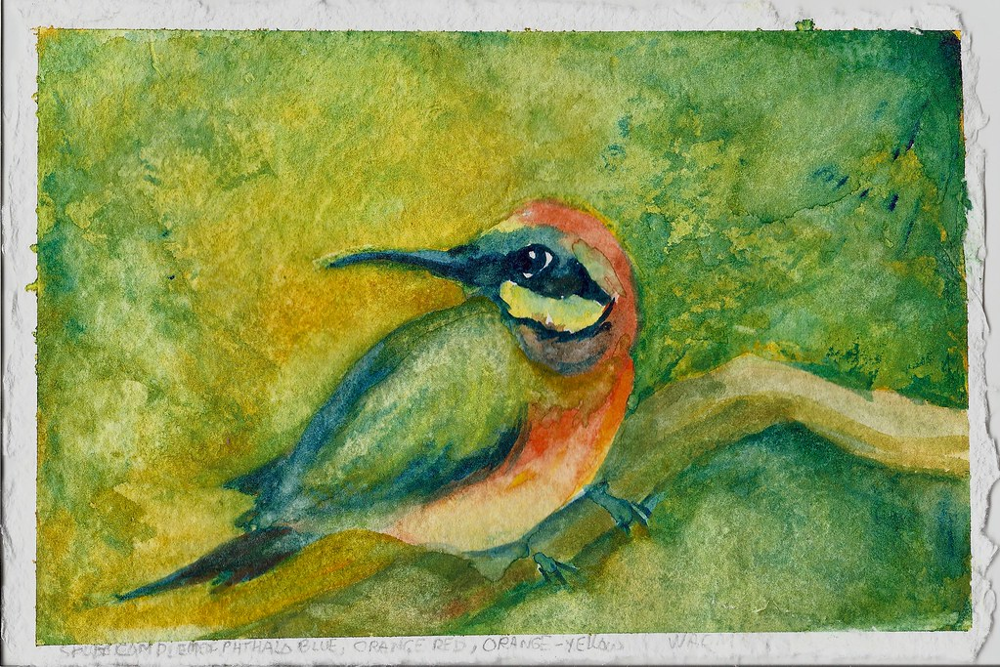
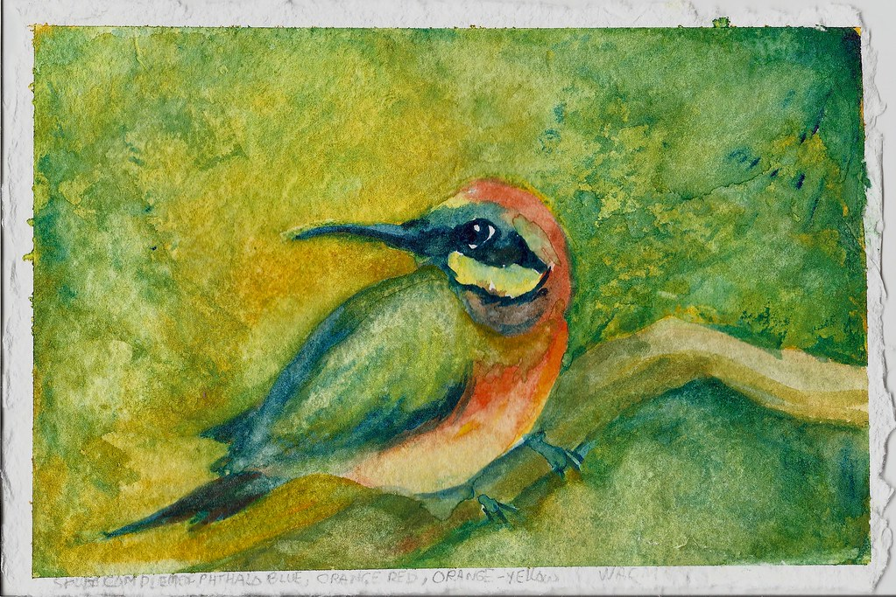
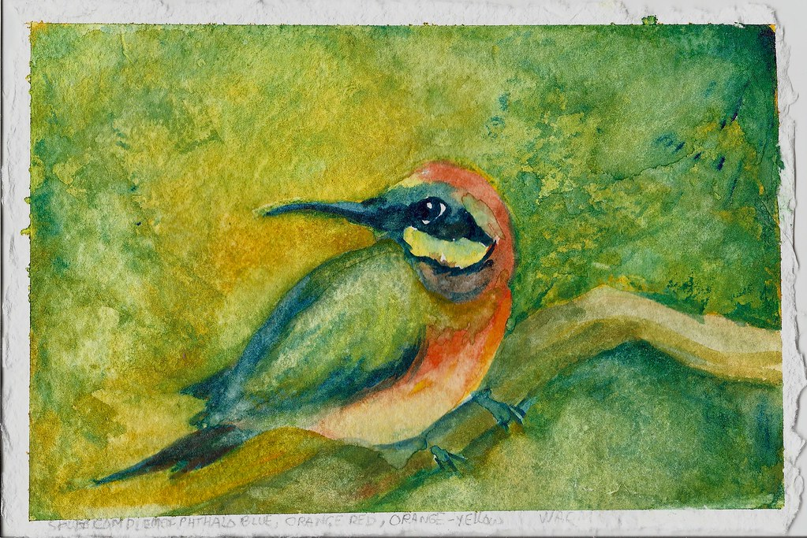

Have you ever noticed that some colors look different when around other colors? This is due to a phenomenon known as simultaneous contrast. This effect occurs when adjacent colors influence each other. Simultaneous contrast makes one color appear to be brighter, darker, or even change hue. A dark color adjacent to a brighter color makes both the colors appear brighter than they actually are. Understanding ths is key to creating cohesive art, as it gives you an idea of how different colors will look next to each other.
There are many types of color schemes which are designed to create different moods/impact. There are 6 main types of color schemes which all have different uses depending on the feel/style you are going for.
A Monochromatic color scheme uses exclusively one hue and different shades of that hue. The monochromatic look is used primarily for creating cohesiveness and harmony.
A Complementary color scheme uses two colors that are opposite on the color wheel. This is often used to catch peoples attention because of the high contrast.
A Split Complementary color scheme uses one hue and two colours adjacent to its complementary. This is often used to avoid loud color crashes.
A Triadic color scheme uses three colours on the color wheel that are equally apart. It's used to create vibrant, balanced, and dynamic designs which are also grabs your attention.
A Tetradic color scheme uses four colors on the color wheel that are equally apart. This color scheme is used to create both contrast and harmony within the design.
An Analogous color scheme uses colours that are next to the color you picked. It's especially good for warm and cool color palettes.

Bird Art Image: Attribution-NonCommercial-NoDerivs 2.0 Generic
License Link
Website Link
Owner:Sandra Strait
Title:"Bee Eater - Split Complementary, Watercolor on Smooth Shizen"
Complementary Blue and Orange art Image:Attribution-NonCommercial-NoDerivs 3.0 Unported
License Link
Website Link
Owner:Aquatic-Magic
Title: "Complementary Colors Project"
Red Desert Art Image: Attribution-NoDerivs 3.0 Unported
License Link
Website Link
Owner:midgptjourney
Title: "monochromatic desert landscape beauty"